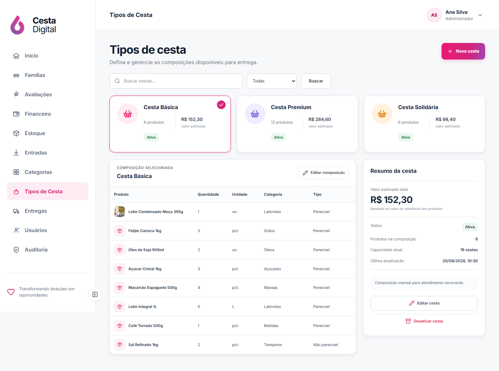
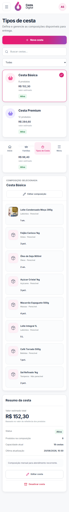
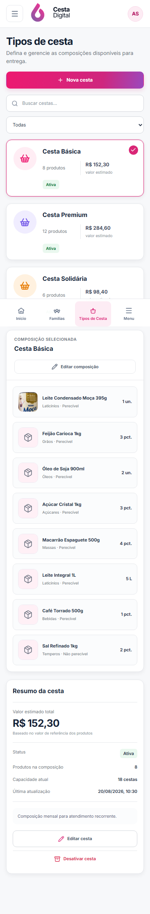
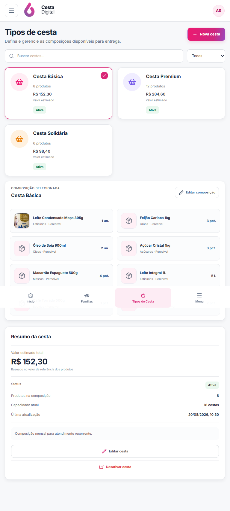
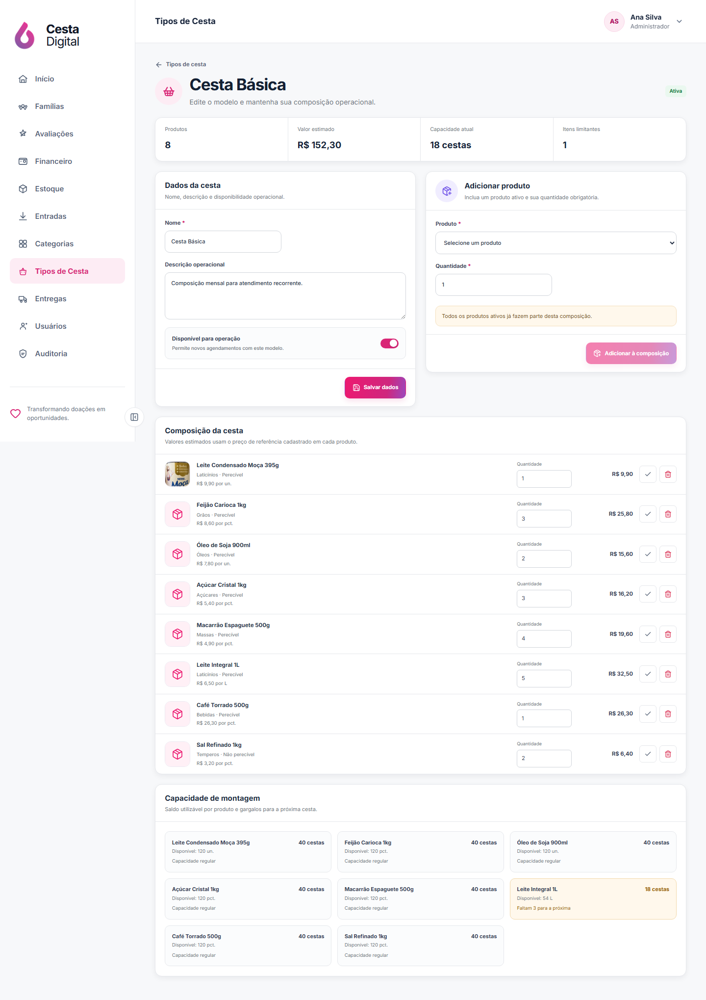
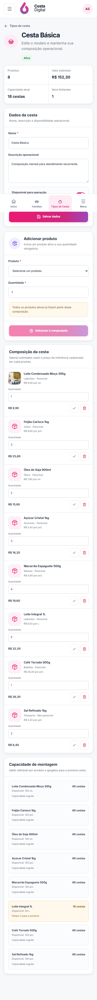
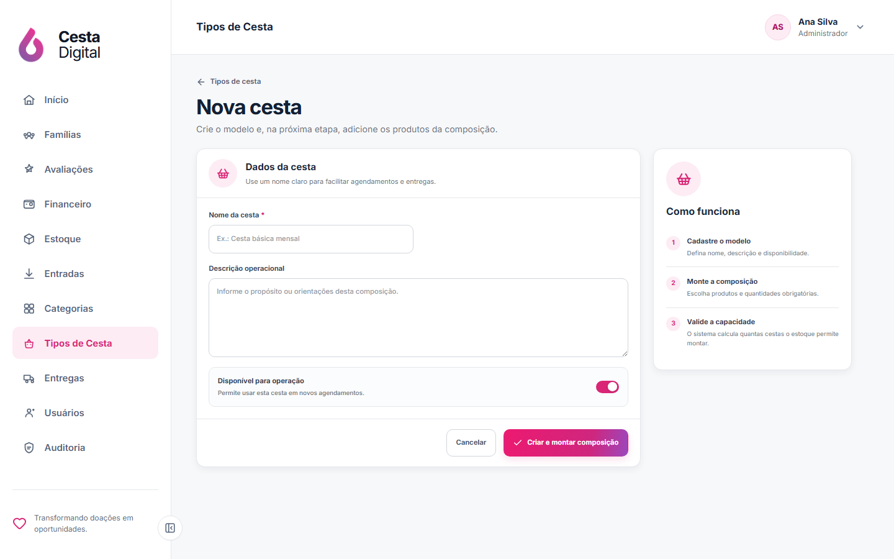
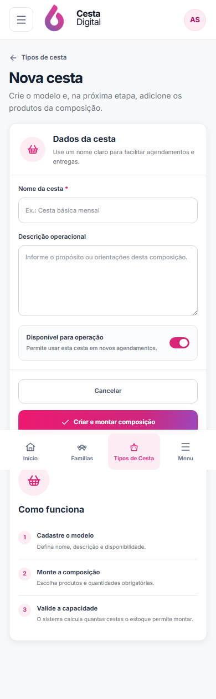

V2-11 · Tipos de Cesta
Comparação da direção visual com a composição, a capacidade de estoque e os valores reais do Cesta Digital.
Aguardando aprovação visual de GabrielReferência × implementação
Clique em qualquer imagem para abrir a captura integral em uma nova aba.


Composição responsiva
Desktop mantém cartões, composição e resumo lado a lado; tablet e mobile reorganizam o conteúdo sem comprimir a tabela.



Cadastro e edição preservados
As rotas existentes receberam a mesma linguagem visual e continuam usando os contratos reais de cesta e receita.




Fidelidade funcional
Produtos, quantidades, unidades, categorias e imagens vêm da receita e do catálogo persistido.
O total é a soma da quantidade necessária pelo valor unitário de referência do produto, sem fingir custo contábil.
A edição mantém a disponibilidade calculada pelo backend para mostrar quantas cestas o estoque utilizável suporta.
Duplicação não foi simulada porque não existe operação atômica; ativar, desativar, editar e compor usam APIs reais.